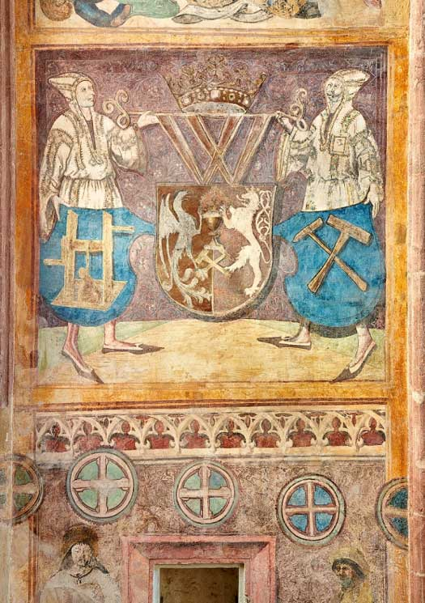

23.–25. září 2022
ZÁKLADNÍ INFORMACE
26. setkání hornických měst a obcí ČR
v Kutné Hoře se koná 23.–25. září 2022.
Myšlenka těchto setkání vznikla již v roce 1996 při setkání zástupců Havířské jednoty Altenberg a Rudných dolů Příbram s. p. o. Od roku 1997 se spolky setkávají pravidelně. Garantem této akce je Sdružení hornických a hutnických spolků České republiky.
Zdař Bůh! Došlo stříbro?
To brzy přijedou do Kutné Hory ověřit horníci z celé země. Při této příležitosti společně oslavíme bohatou historii města.
Součástí víkendu plného oslav bude mimo jiné
- průvod horníků městem
- slavnostní ceremoniál v parku pod Vlašským dvorem - Breüerových sadech
- kulturní program na Palackého náměstí
a na dalších místech v podobě Svatováclavských slavností.
ZÁKLADNÍ PROGRAM
pro registrované
23. 9. 2022, 20:00
ZAHAJOVACÍ SETKÁNÍ
Zahajovací setkání zástupců spolků proběhne v konferenčním sálu GASK.
24. 9. 2022, 8:00 - 9:30
PŘIVÍTÁNÍ NA RADNICI
Starosta města přivítá zástupce hornických měst a obcí ve velké zasedací síni Vlašského dvora.
24. 9. 2022, 10:00
MŠE V CHRÁMU SV. BARBORY
Slavnostní mše proběhne v chrámu sv. Barbory. Po skončení mše proběhne řazení spolků a následný průvod městem aneb Hornická paráda. Trasu průvodu naleznete ZDE.
24. 9. 2022, 12:15
SETKÁNÍ V PARKU POD VLAŠSKÝM DVOREM
Slavnostní ceremoniál s prezentací spolků, stužkováním, předáním světla sv. Barbory a putovního praporu a vystoupením hornických kapel.
24. 9. 2022, 16:00
PŘEDÁNÍ CEN ČESKÝ PERMON
Předávání cen Český Permon 2022 proběhne v kostele sv. Jana Nepomuckého. V doprovodném programu vystoupí USPS Tyl.
Dále doporučujeme všem registrovaným účastníkům přesunout se na Palackého náměstí, kde budou probíhat Svatováclavské slavnosti.
Program Svatováclavských slavností je ke stažení v PDF ZDE
POKYNY PRO ÚČASTNÍKY
Na akci je nutné se registrovat prostřednictvím registračního formuláře a uhradit účastnický poplatek 200 Kč/os.
Po příjezdu do Kutné Hory:
Nezapomeňte svůj příjezd nahlásit ve Vlašském dvoře v 1. patře, v sídle Průvodcovské služby, kde obdržíte registrační pásky.
Nahlásit se můžete v pátek 23. 9. 2022 od 15 do 19 hodin nebo v sobotu 24. 9. 2022 od 7 do 8:30 hodin.
ZAREZERVUJTE SI VČAS UBYTOVÁNÍ A PODÍVEJTE SE NA MOŽNOSTI STRAVOVÁNÍ
Mimo nabízený kulturní program můžete v Kutné Hoře navštívit nespočet památek.
Máte také možnost si zarezervovat svého lokálního průvodce
v Průvodcovské službě Kutná Hora, p. o.
Podívejte se na možnosti ubytování v Kutné Hoře a okolí.
HORNICKÁ PARÁDA
Řazení bude upřesněno po uzavření registrace 30. 4. 2022. Trasu průvodu naleznete ZDE.
ČESKÝ PERMON
Český permon je cena udělovaná 1x ročně celkem v pěti kategoriích
v rámci České republiky osobnostem nebo institucím, které se významně zasloužily o rozvoj hornických tradic.
Ceny uděluje Sdružení hornických a hutnických spolků České republiky, a to v těchto kategoriích:
- Hornický folklór
- Záchrana technických památek
- Největší počin roku
- Celoživotní dílo
- Mimořádná cena
Cenou je soška permona na podstavci ve tvaru zvonku.
Předání cen proběhne v kostele sv. Jana Nepomuckého 24. 9. 2022 od 16 hodin.
HORNICKÝ SPOLEK BARBORA
ve spolupráci s městem Kutná Hora a Českým muzeem stříbra, p. o., zve všechny příznivce hornictví, kutnohorské patrioty a přátele do Kutné Hory.
Zajímá vás více o našem Hornickém spolku Barbora? Podívejte se na naši facebookovou stránku.